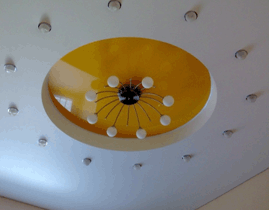
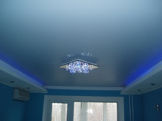
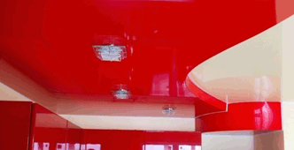

Шовные и бесшовные натяжные потолки в Киеве от компании «Sidus»
Компания «Sidus» предлагает Вам стандартные и эксклюзивные потолочные системы любой
сложности. Уже более 5-ти лет мы занимаемся установкой и сервисным обслуживанием натяжных
потолков (французские и немецкие шовные ПВХ и бесшовные Clipso швейцарские – тканевые ) в г. Киеве и области. Наши цены, профессионализм, ответственность и аккуратность наших
специалистов Вас приятно удивят.
Натяжной потолок от компании «Sidus» великолепно
подчеркнет дизайн и интерьерное решение Вашего помещения.
Почему натяжные потолки в Киеве столь популярны?
Натяжные потолки, стоимость которых вы можете уточнить у менеджера нашей компании, обладают рядом неоспоримых преимуществ по сравнению со своими предшественниками – обычными потолками:
- Долговечность – натяжные потолки, цена которых весьма демократична, прослужат более 20 лет при минимальном уходе (при необходимости можно протереть влажной губкой) и не потеряют внешний вид;
- Прочность и водонепроницаемость – выдержат более 100 л воды на 1 м², что позволит уберечь Вашу квартиру от затопления. Натяжной потолок в Киеве без проблем восстанавливается после слива воды;
- Пожаробезопасность – только тлеют, но не горят;
- Экологичность – не выделяют вредных веществ, аллергенов, на них не оседает конденсат и пыль(можно применять в детских, ванных комнатах, бассейнах, медицинских и др. помещениях);
- Разнообразие – имеют очень широкую гамму цветов (более 100 видов) и фактур на любой вкус;
- Быстро и практически без мусора монтируются и также легко демонтируются. Повторный монтаж натяжных потолков не повлияет на их качеств;
- Под натяжной потолок можно провести и спрятать любое количество проводов для освещения, пожарной сигнализации и т.д. Установка натяжных потолков может быть выполнена на любой высоте;
- И наконец: натяжные потолки в Киеве сегодня уже перешли из категории предметов роскоши в категорию доступности.
Какой натяжной потолок выбрать?
Чтобы определиться какой натяжной потолок подойдет именно для той комнаты, квартиры, дома или
офиса, где Вы планируете его установить, необходимо, прежде всего, разобраться с видами этих
потолочных покрытий. Мы поможем Вам это сделать.
Наша компания предлагает натяжные потолки разных стран изготовителей: из Франции, Германии
и Швейцарии.
По виду материала натяжные потолки делятся на шовные (сварные) из пленки ПВХ и бесшовные тканевые.
-
Шовные натяжные потолки производятся из особо прочной пленки ПВХ толщиной от 0,15 до 0,35 мм, а ширина варьируется от 1,3м до 5м. Шов делается при помощи специального оборудования, очень прочен и практически незаметен.
Пленочные натяжные потолки бывают различными по фактуре:

- Матовые натяжные потолки (как цветные, так и белые) бывают гладкие и фактурные. Гладкие могут давать еле заметное отражение. Фактурные - создают впечатление "шероховатости". Внешне они имеют сходство с гипсокартонными совершенно ровными потолками, поэтому идеально подходят для жилых помещений.
- Сатиновые создают эффект ткани, слегка отражающей световые лучи, хорошо моются и создают уют в доме.

- Глянцевые натяжные потолки (их ещё называют лаковыми) блестящие визуально увеличивают любое помещение. Имеют самую широкую цветовую гамму. К тому же на них менее заметны сварные швы.- Перламутр и металлик имеют металлизированные вкрапления, что придает пленке изысканность и прекрасно подходит для стиля HI-Tech.
-
Бесшовные натяжные потолки производятся из полиэстерной ткани шириной до 5м, которую дополнительно пропитывают полиуретаном.
Бесшовные натяжные потолки и стены Clipso, которые предлагает наша компания – идеальное решение для покрытия больших помещений без швов.
Clipso - монтаж потолка без предварительного нагрева помещения (газовые нагреватели не используются).
Бесшовные натяжные потолки Clipso – идеальное решение для оформления выставочных стендов, использования в жилых и общественных помещениях. Благодаря инновационным системам профилей, Clipso могут создавать самые сложные и разнообразные формы на потолках и стенах как в классическом так и в стиле модерн. Имеется возможность нанесения фотопечати. Купить натяжные потолки вы можете в любое удобное время, связавшись с менеджерами. Оптимальное соотношение цены и качества – наше бесспорное преимущество!
Итак, виды натяжных потолков вам теперь известны, осталось лишь выбрать подходящий цвет и
текстуру, определиться с дизайном, и свой потолок Вы не узнаете!
Пленочный и бесшовный натяжной потолок украсит любую квартиру, окажется уместным в офисе,
станет стильным элементом оформления общественного места. Но, чтобы не разочароваться в
качестве покрытия и работе мастеров, рекомендуем Вам заказать немецкие, или бельгийские, или
французские натяжные потолки для установки в Киеве и области в нашей компании – цена отличная,
качество достойное, сроки минимальные. Хотите недорогой натяжной потолок – цена Вас устроит,
позвоните нам и обсудите этот вопрос. Мы установим Вам потолки натяжные с гарантией качества и
по доступной цене.
Для получения подробной информации Вы можете вызвать на дом консультанта или заказать обмер потолков, позвонив нам. Вызов мастера по г. Киеву бесплатный.